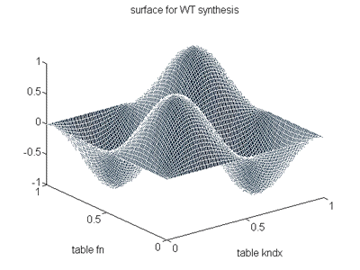

As an extension to ordinary wavetable synthesis, wave terrain synthesis (WTS) extends the principle of wavetable lookup to the scanning of three-dimensional surfaces (see the Computer Music Tutorial, by Curtis Roads, pp.163-167). One can interpret WT Synthesis as two-variable function synthesis, and even implement it as pure orc code, but then the computational costs are incremented substantially. It´s better to deal with a 2-dymensional table, and index it in a way similar to wavetable synthesis.
The lack of arrays in Csound is a major problem when one tries to implement this kind of algorithms. Some estrategies are possible, notably those involving the new R.Whittle opcodes for table manipulation, or the zak system. In my designs I used the table generator ftgen, which is able to create tables from whithin the orchestra, though in a non-standard way.
ftgen is intended to be called in the header statement, but, as I needed full control over the parameters of the table being generated, I placed it in an instrument which is executed first and generates the tables using a simple loop. I created a squared surface of n*n points as a row of n tables of size n (this constraints the surface sides to be multiple of 2). This method is straightforward and fast, and a wide variety of different surfaces can be generated this way.
To get predictable waveforms from WT synthesis one must begin with simple surfaces and paths. But by simply looking at the surface a great deal of information can be extracted. Using Winsound, for example, you can get a close idea of the surface by looking at those hundreds of tables generated being rapidly displayed, like multiple slices of the surface. To index the table one must design an orbit, that is, an arbitrary path trough the surface. It is important to notice that the resulting waveform is influended both by the surface and by the orbit itself. Both for simplicity and predictability I often use circular or spiral orbits. Some instruments use more complex paths, though.
Let´s as an example consider the surface (given in the example num. 7)
z(x,y) = sin(2*pi*x)*sin(2*pi*y) with both x and y in [0,1]

Indexing it with a circular orbit of radius r centered at (.5, .5)
x = .5 + r*cos(2*pi*f)
y = .5 + r*sin(2*pi*f)
will give us the following output
z = sin(2*pi*(.5 + r*cos(2*pi*f))*sin(2*pi*.5 + r*sin(2*pi*f))
which is the product (amplitude modulation) of two frequency-modulated signals. For the serious researches, further analysis should be necessary, of course.
The indexation is not without problems with Csound, for the ordinary table and tablei ugens don´t allow to change the table number at k rate. In my first attempts (version 3.47 beta) I used tablera (again in a non-standard way), but this forces ksmps =1. The new tablekt and tableikt opcodes (from v. 3.47) are the most suitable ones for this purpose. I´ve already used them in most of those designs. With tablera one must take into account that the indexes are truncated. 2D-Linear interpolation will be used to improve the s/n ratio without the need of large memory requirements. With tableikt the table look-up process already perfoms interpolation, and the result is much more elegant, resulting in a faster implementation.
You must also consider the convenience of using limit or wrap mode in tableikt. With periodic waveforms the wrap mode will elegantly solve the problem of indexing accidentally outside the [0,1] range.
| All the instruments have been tested with Winsound 3.47. The opcodes used have been recently implemented, so previous versions won´t work at all, except maybe for the first instruments, from v. 3.45 |
This first orchestra shows the basic implementation of WT synthesis. The surface is simply an inclined plane which, indexed by a circular orbit, will give a pure sine wave as output.
Let´s compare the previous code with this one, with 2-D interpolation implemented as orc code. The quality has been greatly improved at some computational cost. All the remaining examples will use interpolation. With it one can use fairly small tables (256 points or less) without causing a noticeable table-lookup noise.
When the surface itself is sinusoidal (or more complex) we can obtain FM like timbres. The same applies to using different frequencies in the x and the y component of the (circular) orbit. More experiments later on.
Now we´ll use the new tableikt opcode, which works like tablei but allowing k-rate table change, with interpolated read-out like in tablei. Even without any further refinement the result should be much better than using tablera with no interpolation.
And the same instrument with interpolation.
Till now we´ve not done anything new, as all the tables generated are identical and the result could be perfectly the same using a single one (a simple oscili unit!). Let´s try now to create true 2-D tables. First, we´ll use the previous design but gradually changing the initial phase of the cosine wave stored in the tables.
This instrument implements the surface given as an example in the Introduction. The orbit is a spiral whose radius is controled by an envelope. Look carefully at the code to see how can you implement a virtual envelope to all the tables (here a sine wave).
Other GEN routines could be used as well, each one with its own applications. This one uses GEN11 varying dynamically r (a multiplier in an amplitude coefficient series). It creates a kind of frequency-dependant resonance, an effect similar can be obtained with waveshaping. At low frequencies the sound is great!
This instruments implements dynamic waveshaping, storing in each table a slightly different GEN13-generated table. The orbit indexes first a zone with only the 1st harmonic (though not in a fixed table, but in a elliptic path which provides a minimally evolving timbre), then one with only even harmonics, afterwards a zone with all the harmonics present and finally just with odd harmonics. Quite costly to implement without WTS.
The last example uses a fairly simple surface indexed by a complex orbit, setting the frequencies of the oscil units associated to the x and y coordinates to different values, which creates a typical timbral evolution, ranging from tremolo effects to FM timbres. A non-periodic (inharmonic) signal can be obtained simply by setting the frequencies of the oscil units controlling the x and the y dimensions of the path to mutually prime numbers. The idea is not very different from ordinary FM synthesis. One could use a chaotic orbit and see how it sounds, but I believe the result would´t be much different from using that chaotic orbit itself to generate the sound...
The next three examples are suposed to be more useful. There´s nothing new in them, but the timbres are more interesting.
Once the table has been stored in memory, it is efficient to index it with multiple and slightly different orbits, for example placing the center of the orbit at different places in the surface. This orquestra creates in this way a very dense, deep analog-like drone sound.
Not to forget more creative timbres, here is a sample. The surface is make of random values following a Weibull distribution. Variations in the variable of GEN21-10 and in the orbit provide a timbre which ranges from noise to a quasi-periodic granulated signal (enhanced with the interpolation in the table look-up and the lowpass filter before the output).
A timbral change from brass to clarinet can be implemented with dynamic waveshaping and other refinements. Some people call this morphing... Don´t expect too much of this design as it is entirely empyrical, in fact the effect is too subtle.
WTS has shown to be a simple yet effective way to create complex timbral textures. With its graphical background it is also quite easy to predict the basic character of the sound, and the code is computationally fast, though the memory requirements can be quite large. To design arbitrary surfaces my method is not enough flexible, though. Sometimes it would be necessary to implement them as orquestra code, but then all the computational efficiency would be lost. WTS could be also used as a tool for sound modification, by using a recording as one dimension of the surface, or as the orbit. I´ve not carried out any experiments in this direction.